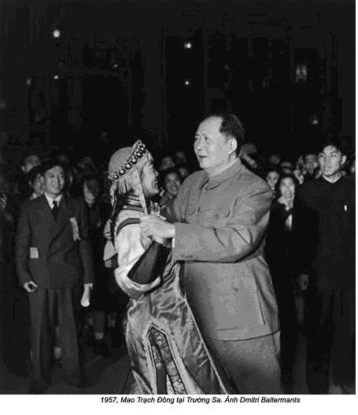
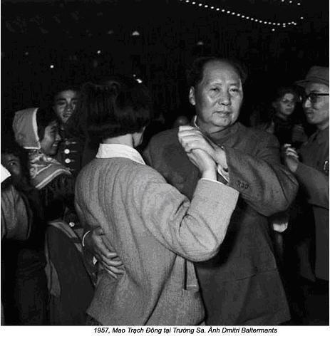

Chương 13

iang Thanh cũng lưu lại Quảng Châu, tôi thường xuyên gặp. Sau khi đến được hai ngày, vệ sĩ riêng của Mao, Lý Ẩm Kiều nói với tôi:
- Đồng chí nên báo cáo tình hình sức khỏe của Chủ tịch cho Giang Thanh biết.
Tôi hỏi:
- Sao vậy? Hôm đầu chúng tôi đến có thấy mặt bà ta đâu.
Lý hạ giọng:
- Nếu đồng chí không báo cáo, bà sẽ cho đồng chí coi thường.
Tôi làm theo lời khuyên của Lý. Khoảng 9 giờ sáng, người ta tôi được đưa đến phòng làm việc của bà ở khu biệt thự cũ của Tôn Dật Tiên, khu nhà số 2. Giang Thanh mặc bộ y phục màu xanh sẫm, đi giày da trắng, đế bằng, tóc búi tó. Bà đang ngồi trên ghế và đọc tờ Bản tin Nội bộ, hàng ngày được chuyển cho những nhà lãnh đạo cao cấp. Trong đó có nhiều tin quan trọng trong và ngoài nước, nguyên văn không cắt xén, phần lớn đều lấy từ báo chí nước ngoài. Giang Thanh cũng bắt chước thói quen của Mao, khi tiếp khách tay thường cầm sách. Tuy nhiên, ở bà việc này không gây ấn tượng. Bà chỉ vờ đọc, thường khi được thông báo khách có mặt mới cầm sách lên.
Nhớ lại lời nhắc nhở nhiều lần của Lý Ẩm Kiều và y tá, phải đặc biệt lễ phép đối với phu nhân của Chủ tịch, tôi đã ngoan ngoãn chào Giang Thanh. Bà ra hiệu cho tôi ngồi. Tôi nói:
- Thưa, Chủ tịch vẫn khỏe ạ. Mặc dù Chủ tịch sinh hoạt không theo giờ giấc, không có lợi cho sức khỏe, nhưng Chủ tịch vẫn rất thọ. Nếu ngay bây giờ chúng ta buộc Chủ tịch thay đổi, có thể sẽ có hại nhiều hơn là có lợi ạ.
Bà xẵng giọng hỏi lại:
- Đồng chí cho rằng việc Chủ tịch sinh hoạt điều độ không quan trọng sao?
- Thưa, Chủ tịch đã mắc chứng mất ngủ từ nhiều năm nay. Chỉ có thuốc ngủ mới làm cho Chủ tịch chợp mắt được.
Bà cau có vặn lại:
- Rõ ràng đồng chí không muốn thay đổi gì.
- Dạ, đúng thế ạ, nếu không chứng mất ngủ của Chủ tịch thêm trầm trọng.
- Chẳng có thày thuốc nào có lời khuyên hay đến nỗi người ta phải dùng thuốc ngủ. Quan điểm chữa bệnh của các bác sĩ có phải không?
Giọng bà đầy mỉa mai, giễu cợt, cuộc gặp gỡ này đang trở lên tệ hại.
- Dạ, đúng thế.
Lông mày bà nhướn lên, nhìn tôi chằm chằm:
- Đồng chí đã báo cáo điều này với Chủ tịch chưa?
- Dạ, đã.
Giang Thanh ngả người lại, ngón tay gõ gõ vào mép bàn, hỏi:
- Ý Chủ tịch thế nào?
Tôi giải thích:
- Chủ tịch nhất trí và bảo mỗi ngày một có tuổi rất khó bỏ được thói quen.
Bà ta hơi cúi đầu, ngửng lên rồi lấy tay vuốt mớ tóc xoã. Tôi biết thói quen của Mao làm Giang Thanh rất khó chịu, bà ta muốn thông qua tôi thay đổi thói quen của chồng, nhưng không dám nói thẳng với Mao, bà là người thiếu bản lĩnh, trung thành một cách hèn hạ và chẳng ngượng ngùng nhận những lời xiểm nịnh của những người xung quanh. Không có Mao, bà chả là cái thá gì với mọi người.
- Tôi đồng ý với ý kiến của đồng chí, ngày xưa nhìều cán bộ cao cấp cũng đã khuyên nhủ Chủ tịch thay đổi thói quen đó, tôi đâu có tán thành.
Bà mỉm cười, hỏi:
- Đồng chí không tăng liều thuốc đấy chứ?
- Dạ, không.
- Nhưng đồng chí biết rõ thuốc ngủ có hại cho sức khỏe chứ?
- Đã nhiều năm Chủ tịch mắc chứng mất ngủ, thuốc giúp Chủ tịch ngủ là lấy lại sức.
- Xem ra đồng chí không muốn thay đổi cách điều trị.
- Dạ, đúng thế, chỉ trừ khi nào Chủ tịch cần tăng liều lượng thôi ạ.
- Không, bác sĩ, dùng thuốc ngủ đâu có tốt gì.
Bà ta bắt đầu gài bẫy tôi:
- Thế đồng chí có dùng thuốc ngủ không đấy?
- Thưa, tôi không.
Bà ngạo mạn, hỏi:
- Đồng chí không uống, đồng chí biết thuốc ngủ có hại cho sức khỏe, có đúng thế không?
- Thưa, tốt hơn là không nên dùng thuốc ngủ ạ. Nhưng từ nhiều năm nay Chủ tịch đã quen…
Bà thô lỗ ngắt lời tôi:
- Đồng chí đã nói gì đó với Chủ tịch, để ông tiếp tục dùng thuốc ngủ chứ!
- Thưa vâng. Tôi đã từng hiểu cặn kẽ thói quen giấc ngủ của Chủ tịch. Hàng ngày ông ngủ muộn hơn hai hoặc ba tiếng so với ngày hôm trước. Thỉnh thoảng ông thức liền 24 tiếng hoặc 36 tiếng. Nhưng sau đó ông ngủ liền từ 10 đến 12 tiếng. Tính trung bình mỗi ngày ông ngủ từ 5 đến 6 tiếng. Thoạt nhìn, điều này có vẻ không theo quy luật, nhưng thực ra thói quen này cũng có sự đều đặn riêng.
Giang Thanh lại hỏi:
- Tại sao đồng chí không thông báo sớm tất cả điều này cho tôi biết?
Tôi mất dần kiên nhẫn:
- Thưa, tôi chưa có điều kiện. Chủ tịch chỉ mới vừa nói điều này với tôi.
Giang Thanh lạnh lùng nói:
- Thôi được, chúng ta tạm thế đã. Lần sau đồng chí hãy nói cho tôi biết trước khi đồng chí báo cáo với Chủ tịch.
Tôi không có ý định phải thưa bẩm với Giang Thanh trước. Bà ta không thể trực tiếp kiểm soát được chồng, định qua tôi để tác động đến Mao. Nếu tôi bẩm báo mọi việc về Mao, tôi sẽ phải làm theo chỉ thị của bà. Tôi tự nhiên chui đầu vào bẫy. Tôi lễ độ cáo từ, nhưng phớt lờ chỉ thị.
Một trận mưa rào xối xả đổ xuống khi tôi rời phòng nên đành phải đứng trú mưa ngoài hành lang. Bà ta đi ra nhìn thấy tôi, hỏi:
- Bác sĩ vẫn còn ở đây à?
Sau khi tôi giải thích lý do, giọng bà trở lên thân thiện, bảo:
- Vào trong này đã, ta nói chuyện phiếm với nhau.
Bà hỏi tôi về quá trình học tập, bà kể cho tôi nghe chuyện khám bác sĩ ở Thượng Hải lần ấy bà ốm nặng. Viên bác sĩ khám qua loa lấy lệ rồi ghi đơn thuốc chẳng thèm hỏi han đau ốm ra sao. Giang Thanh thắc mắc, nhưng bác sĩ lờ tít, an ủi mấy câu, bảo về. Giang Thanh nổi đoá, quát ầm ầm:
- Ông ta khám tôi như khám chó không bằng. Cách khám bệnh và hành xử của ông với bệnh nhân thật khốn nạn.
Rồi hầm hầm bước ra khỏi cửa, không thèm lấy đơn thuốc.
Dừng một lát sau khi kể xong chuyện, hỏi tiếp:
- Các bác sĩ được đào tạo ở Tây phương theo lối hành xử như vậy sao? Không một ai trong những bác sĩ quan tâm đến bệnh nhân có thật thế không?
Tôi khiêm tốn phản đối:
- Không phải bác sĩ nào cũng tắc trách như vậy.
Tôi cố giải thích và dẫn chứng rất nhiều bác sĩ đã hết lòng cứu chữa người bệnh.
Bà phản pháo:
- Chuyện ấy chẳng có gì ngoài chuyện ban phát chút xíu chủ nghĩa nhân đạo của tầng lớp trung lưu bố thí mà thôi.
- Có nhiều câu chuyện rất cảm động…
Tôi cố gắng nói để bà hiểu, nhưng vô ích. Trong Giang Thanh, phục vụ nhân nhân mà không có lập trường giai cấp là không thể chấp nhận. Bà ta cho rằng chỉ có “chủ nghĩa nhân đạo cách mạng” do chính công nhân và nông dân làm chủ mới thực sự phục vụ cho giai cấp mình. Giai cấp đối kháng, kể cả tầng lớp trung lưu cũng không đáng được làm công việc trị bệnh.
Tôi tin việc điều trị có liên quan đến chuyện quan hệ giai cấp, bạn bè hoặc kẻ địch, Giang Thanh thì không, chỉ tin chủ nghĩa nhân đạo cách mạng còn coi chủ nghĩa nhân đạo tư sản, tư bản là tồi tệ và xấu xa.
Bà ta trả lời tôi:
- Đồng chí là bác sĩ, tôi là bệnh nhân. Tôi không muốn ai tranh luận với tôi.
Tôi không cố ý gây bất hoà với phu nhân của Chủ tịch và tôi đã từng bị khiển trách.
Sau khi tôi đi khỏi, Giang Thanh nói với một cô y tá của bà:
- Bác sĩ Lý thật ương ngạnh và kiêu căng, cứ khăng khăng giữ ý kiến bảo thủ. Chúng ta phải dạy cho hắn một bài học.
Tôi kể cho Mao cuộc nói chuyện của tôi với Giang Thanh. Mao mỉm cười, bảo:
- Chúng ta không hoàn toàn phản đối chủ nghĩa nhân đạo thuần tuý, nhưng phản đối cách hành xử chủ nghĩa nhân đạo của kẻ thù.
Sự khó chịu của Giang Thanh làm Mao phải suy nghĩ, ông có ý định làm người trung gian giải hoà giữa tôi và vợ ông. Ông nói:
- Xem ra Giang Thanh đã công khai đối đầu với đồng chí. Đồng chí nên có lời nịnh nọt một chút chắc làm bà ta hài lòng.
Uông Đông Hưng cũng vậy. Ông ta muốn tôi kính trọng Giang Thanh hơn nữa và lo ngại hậu quả sẽ xảy ra khi tôi không làm theo lời. Có lẽ ông ta cũng đã từng xung đột với Giang Thanh.
Lời khuyên của cả hai người làm tôi ngạc nhiên, bởi vì tôi từng được huấn thị nên trung thực, tránh xa những chuyện bỡ đỡ nịnh nọt.
Mặc dù tôi không muốn nịnh Giang Thanh và thấy khó gây được thiện cảm, nhưng tôi vẫn tìm cách để hiểu bà.
Bà sống một cuộc sống xa hoa, muốn gì được nấy, chẳng phải làm gì, thật nhàm chán và vô nghĩa. Giang Thanh bị bỏ rơi. Mao không quan tâm đến và bà cũng chẳng có vai trò gì trong cuộc đời ông. Ông hơn vợ tới 20 tuổi và hai người có những xu hướng rất khác nhau. Giang Thanh coi trọng giờ giấc và lập trình định sẵn, ngược lại Mao chối bỏ tất cả mọi sự điều độ. Mao thích đọc, còn Giang Thanh lại thiếu tính kiên nhẫn đọc sách. Mao tự hào về sức khỏe, trái lại Giang Thanh luôn cảm thấy đau yếu, bệnh tật. Chưa bao giờ họ cùng ăn với nhau. Trong khi Mao ưa thích những món ăn cay của vùng Hồ Nam, Giang Thanh lại mê món cá nấu với rau nhạt nhẽo, hoặc làm ra vẻ sành các món ăn “phương Tây” từng nếm thử ở Liên Xô và còn đòi hỏi cả món thịt hầm và trứng cá caviar.
Người ta đã từng hết sức cố gắng tìm cho bà một công việc phù hợp. Năm 1949 bà được bổ nhiệm làm Phó phòng kiểm duyệt phim thuộc bộ Văn hoá, nhưng bà tỏ ra ngạo mạn, hễ động chuyện gì bà đe sẽ báo cáo với Mao chủ tịch, đến nỗi chẳng ai có thể chịu nổi. Sau đó đổi bà sang làm phó phòng Thư ký chính trị của Văn phòng tổn hợp của Dương Thượng Côn ở Trung Nam Hải, nhưng bà lại nói, Mao ra lệnh bảo bà miễn nhiệm.
Mao đành phái cử bà làm bí thư riêng của ông. Với chức vụ này, bà phải tổng hợp tin tức từ các bản tin mà phần lớn trong tờ Tin Nội Bộ. Vì không có thời gian đọc, Mao giao cho bí thư đọc và tổng hợp tóm tắt những tin quan trong. Các nhà lãnh đạo đảng và nhà nước đều giao cho vợ làm công việc tương tự như vậy.
Mặc dù Giang Thanh thường nhận đầy đủ bản Tin Nội Bộ nhưng ít khi đọc. Đọc xong, không thể phân biệt được tin nào quan trọng, tin nào không, đến nỗi công việc của bà chẳng giúp gì được cho Mao. Vì vậy, Lâm Khắc phải đảm nhiệm công việc của Giang Thanh là thu thập tin tức và báo cáo.
Giang Thanh, thuộc loại người Trung Quốc thường ví “xiao congming”, kẻ khôn vặt. Giỏi những chuyện vặt vãnh, mánh khóe ranh ma nhưng lại dốt đặc về chuyện đại sự, kém khả năng phân tích tổng hợp. Bà biết một chút về lịch sử Trung Hoa, còn những chuyện bên ngoài biên giới bà mù tịt. Bà có biết một số nước lớn, tên tuổi một vài lãnh tụ quốc gia đó, nhưng chỉ biết qua loa đại khái. Về Tây Ban Nha, bà không hiểu về thể chế chính trị thời xưa, chẳng biết ai là người đang lãnh đạo quốc gia. Bà thường chậm hiểu cái mà bà vừa đọc. Có lần bà nói với tôi, nước Anh không phong kiến như Trung Quốc, vì có nữ hoàng trị vì. Theo bà, chế độ gia trưởng của Trung Quốc mang tính chất phong kiến, cho nên sự lãnh đạo của phụ nữ biểu hiện của thời đại mới, tân tiến hơn. Bà nghe được giọng nói đặc thù Bắc Kinh, nhưng hiểu biết của bà về ngôn ngữ Trung Hoa lại rất hạn chế. Nhưng bà biết cách giấu dốt khi bà thường hỏi thêm những từ đó được phát âm như thế nào trong tiếng địa phương ở Bắc Kinh. Việc tra từ điển đối với bà thật khó khăn.
Mặc dù kiến thức kém cỏi như thế, nhưng bà lại hay giễu cợt, chê bai người khác. Một lần Mao nói đùa rằng tôi thu lượm được kiến thức về lịch sử Trung Quốc nhờ xem kinh kịch Bắc Kinh. Thật là một sự lăng nhục, tôi đã học tập và nghiên cứu lịch sử Trung Quốc hệ thống và nghiêm túc. Nhưng Giang Thanh vẫn tiếp tục lấy lời nhận xét của Mao để châm chọc, tuy câu chuyện tiếu lâm đó đã quá lỗi thời.
Mao không yên tâm về sự thờ ơ của vợ đối với những sự kiện lịch sử và thời sự. Bởi vậy, ông thường gửi sách, tài liệu và những tập sưu tầm tin tức mới nhất để bà nắm được những thông tin như ông. Nhưng Giang Thanh luôn luôn thoái thác. Thay vì đọc, tối ngày bà xem những cuốn phim nhập từ Hong Kong. Bà lấy lý do ốm. Giang Thanh luôn đau ốm, nhưng xem phim chữa được bệnh suy nhược thần kinh của bà.
Năm 1953, Bộ y tế và Văn phòng của lực lượng an ninh đã ra tay với những bệnh tật mơ hồ của bà. Họ cử bác sĩ Hứa Đào đến làm bác sĩ riêng. Ông nguyên là bác sĩ riêng của Mao trước đây, nhưng vì Giang Thanh luôn đau ốm, Mao chuyển bác sĩ Hứa Đào chăm sóc vợ ông.
Giang Thanh đã đẩy cuộc đời của bác sĩ Hứa xuống địa ngục. Trong chiến dịch chống bọn phản cách mạng năm 1954, bà đã công kích ông và sau này vẫn tiếp tục cái trò đê tiện đó. Tại Quảng Châu, ông đã trở thành nạn nhân của những lời vu khống cay độc. Lần này ông bị kiểm điểm vì đã giở trò sàm sỡ với một cô y tá của Giang Thanh.
Cô y tá vốn mắc chứng thiếu máu, luôn cảm thấy mệt mỏi và chóng mặt. Vì vậy, ngay sau khi đến Quảng Châu ít lâu, cô đã yêu cầu bác sĩ Hứa khám cho cô. Bác sĩ Hứa khám cô trong tiền sảnh của nhà khách, nơi cô ở. Bỗng nhiên, một vệ sĩ – một gã nông dân ít học, vô đạo đức, xộc vào phòng trong lúc đang khám. Gã vốn mù tịt về y tế, gã đã vu cho bác sĩ Hứa tội quấy rối tình dục.
Là chỉ huy toán vệ sĩ, Uông Đông Hưng buộc phải lưu tâm đến vụ này. Ông đã chứng minh được Hứa Đào vô tội, biết rõ đạo đức và tư cách của bác sĩ, hiểu rõ sự thất học và tư cách thô lỗ của tên vệ sĩ.
Tôi cũng rất bất bình về sự kiểm điểm này. Đơn giản, không đời nào bác sĩ Hứa lại hành động như vậy. Ông là người rất thận trọng, có thể bướng bỉnh một chút, nhưng ông sống có nguyên tắc và rất đạo đức. Ngoài ra, người ta đã gán cho ông tội có liên hệ với nhóm chống đảng, tôi tin chắc chắn ông không khờ khạo đền nỗi đánh mất tương lai của mình. Trong khi kiểm điểm, tôi đã biện hộ cho bác sĩ Hứa bằng cách đưa ra bằng chứng, sự liêm khiết, sự thành công trong nghề của ông là một tấm gương mẫu mực. Chúng ta không có quyền buộc tội ông với lời tố cáo hoàn toàn vô lý.
Cuối cùng, Mao cũng can thiệp bảo vệ danh dự cho bác sĩ. Bác sĩ Hứa được giải toả khỏi những nghi ngờ và gã vệ sĩ kia bị sa thải. Có lẽ, đây là lần đầu tiên người ta đã cư xử trung thực đối với một thày thuốc trong một vụ xung đột với lực lượng an ninh.
Nhưng Giang Thanh vẫn tiếp tục gây sự với vị bác sĩ của bà. Bác sĩ Hứa phải làm người chiếu phim và chỉ được phép chọn những cuốn phim làm cho bà sảng khoái, vui vẻ để đêm không làm bà mất ngủ. Nếu ông chọn không đúng phim bà thích – điều này thường xảy ra – lập tức bà nhiếc mắng ông thậm tệ. Hứa từ chối, bác sĩ không làm công việc người chiếu phim, nhưng Giang Thanh không chịu. Xem phim là điều trị chứng suy nhược thần kinh cho bà. Vì vậy trách nhiệm của ông phải chiếu phim để chữa bệnh. Tuy vậy, hầu hết các cuốn phim đều không làm cho bà vừa lòng, thường chì chiết ông. Khi xem bộ phim “Cuốn theo chiều gió”, bà quả quyết, đây là phim tuyên truyền cho chế độ nông nô ở miền Nam Hoa Kỳ, bà chửi rủa những người thích bộ phim đó là “bọn phản cách mạng thối tha”. Giữa những năm 1950, câu nói đó của bà cũng chẳng có mấy trọng lượng. Thế nhưng vài năm sau, trong khi diễn ra cuộc Cách mạng văn hoá, với lòng thù hận, bà đã huỷ hoại sự nghiệp và cuộc đời của biết bao con người với câu nói đó.
Nếu bác sĩ Hứa có chọn đúng cuốn phim, bà cũng chẳng hài lòng. Thỉnh thoảng cảnh phim trên màn ảnh quá sáng, kêu làm đau mắt, nếu điều chỉnh tối đi, lại ca cẩm không nhìn thấy gì.
Người ta xây cho bà hai buồng, một để xem phim, một để đọc sách và nghỉ ngơi. Ánh đèn quá sáng sau khi được điều chỉnh, bà lại kêu nhiệt độ trong phòng không được ổn, hoặc quá nóng, hoặc quá lạnh, hoặc quá ngột ngạt, gió lùa quá mạnh, bà tức thời bỏ sang phòng khác. Người ta chẳng bao giờ có thể chiều nổi ý bà, vì thế họ luôn luôn là người có lỗi và phải chịu những lời đay nghiến tưởng như không bao giờ dứt.
Có lần Quảng Châu có đợt không khí lạnh đột ngột tràn về, nhân viên phải chạy kiếm lò và than sưởi, nhưng không dám phá rối sự yên tĩnh của Giang Thanh, họ phải bò nhanh bằng hai tay và hai chân qua cửa sổ phòng khách. Một lần nhân viên bảo vệ tranh luận với bà điệu nhảy tango có 4 hay 5 bước, bực mình bà phạt đứng nghiêm ngoài sân 2 giờ đồng hồ. Khi quay trở về Bắc Kinh, bà ra lệnh máy bay hạ cánh xuống sân bay Tế Nam để đuổi bác sĩ vì người vệ sĩ đã làm bà phật ý trong chuyến bay. Thường xuyên bắt 5 hoặc 6 người phục vụ phải nhanh tay nhanh chân làm theo theo tính khí thất thường. Bà tự cho rằng được phục vụ cho phu nhân của Mao chủ tịch là niềm vinh hạnh, nhưng nỗi khốn khổ của họ cũng phải giá không kém với niềm vinh dự đó.
Khá lâu sau tôi mới biết, vô số câu chuyện dính dáng đến phụ nữ của Mao là nguyên nhân chính gây lên tính khí thất thường của Giang Thanh. Vì hầu hết các nữ y tá dưới quyền tôi đều là những thiếu nữ trẻ, đẹp, quyến rũ dễ làm Mao siêu lòng, nên thỉnh thoảng bà đề nghị tôi hãy lưu tâm, đừng để các cô y tá đó léng phéng với chồng bà. Một lần, tình cờ tôi bắt gặp Giang Thanh ngồi khóc trên một chiếc ghế dài trong công viên ở Trung Nam Hải, trước dinh thự của Mao. Bà khẩn khoản yêu cầu tôi đừng tiết lộ sự việc này, coi như không biết. Stalin chiến thắng trên các mặt trận, nhưng cũng từng thất bại trong tình yêu đó sao. Bà rất lo, chồng bà càng công khai săn đuổi các cô gái trẻ đẹp bao nhiêu, nỗi lo sợ của bà sẽ bị ông bỏ rơi ngày càng lớn bấy nhiêu.
Mao cố gắng không làm bẽ mặt Giang Thanh khi các cô gái quay quanh ông, nhưng đôi khi ông cũng thiếu cẩn trọng. Đã nhiều lần Giang Thanh bắt gặp Mao quấn quýt, ve vãn các cô gái kể cả y tá phục vụ bà. Giang Thanh thường tự hào về sắc đẹp và quyền lực vì thế cách cư xử của Mao đã làm tổn thương lòng tự ái, nhưng chẳng bao giờ dám thể hiện công khai sự khó chịu với Mao. Bà hoàn toàn bất lực việc chế ngự tính trai lơ của chồng.
Mao biết điều đó, có lần ông nói với tôi sau khi tôi phát hiện tính háu gái của ông:
- Giang Thanh thường lo sợ tôi không còn thiết gì đến bà ấy nữa. Tôi đã an ủi, động viên nhiều lần, không có chuyện đó, nhưng vẫn lo phiền. Thế có lạ không?
Mao chẳng hiểu gì phụ nữ, bởi không có người vợ nào muốn chồng mình đi ve vãn, tán tỉnh các cô gái trẻ, ông cũng chẳng hiểu vì sao Giang Thanh vẫn không an lòng.
Cô đơn, thất vọng và đau khổ, Giang Thanh lấy trút đau khổ đó lên đầu tất cả những người phục vụ xung quanh. Tôi không rõ bà đau khổ đến đâu, nhưng bao giờ cũng thấy bà ta tán thành, ủng hộ mọi quyết định của Mao và chẳng dám làm bất cứ điều gì nếu ông không cho phép.
Vì không thể chế ngự được Mao nên bà cố tận dụng cương vị là vợ ông để chỉ huy người khác. Sự chông chênh đó làm cho bà trở nên tầm thường và nanh ác. Đặc biệt bà thường nổi giận với đám vệ sĩ, vì bà biết họ đã giúp Mao trong những vụ bê bối. Nhưng bởi vì những người vệ sĩ lại trực tiếp làm việc cho Mao và ở dưới quyền Uông Đông Hưng, nên khó có cơ hội sinh sự với họ. Do đó, bà chỉ còn biết trút cơn thịnh nộ lên những người phục vụ riêng của bà, trước tiên là các nhân viên y tế.
Giang Thanh liên tiếp chỉ trích những người khác đã làm khổ bà, song thực ra bà lại đày đoạ tinh thần của những nhân viên của bà hơn thế nữa. Bà công khai cho rằng, nếu bà gặp chuyện không hay, mọi người khác cũng phải chịu đau khổ. Chỉ có một số ít người làm việc lâu được với bà, còn hầu hết đều xin thuyên chuyển đi nơi khác để khỏi bị hành hạ.
Mùa thu năm 1956 bác sĩ Hứa Đào xin từ chức. Sau chiến dịch chống bọn phản cách mạng và vụ vu khống quấy rối tình dục, ông đề nghị được đi học bồi dưỡng chuyên môn, xin chuyển về làm việc ở bệnh viện, để ông có điều kiện thể sử dụng khả năng và nâng cao kiến thức. Cuối cùng, ông đã chuyển về Bệnh viện Công đoàn Bắc Kinh, quỹ Rockefeller của Hoa Kỳ tài trợ. Đây là một trong những bệnh viện tốt nhất của Trung Quốc. Lúc đó, tôi đã ghen tị với Hứa Đào về việc ông chuyển công tác.

